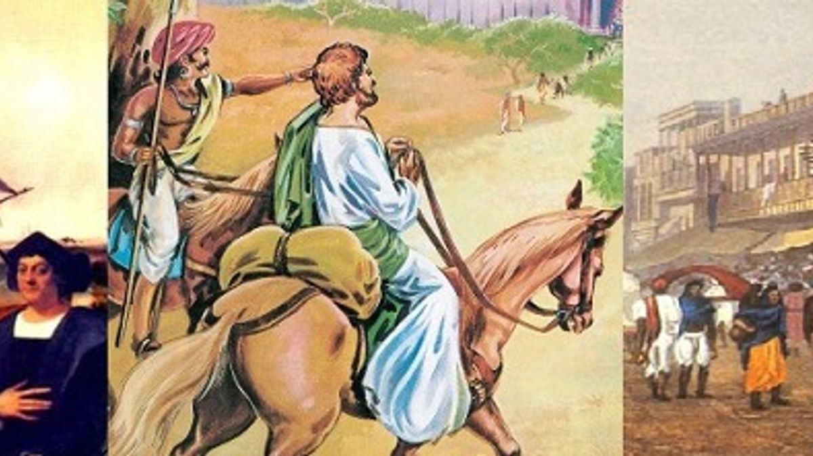

My SST Project
Why did People Traveled to India in Ancient Times
In ancient times, India was a very prosperous and advanced country. The interactions between ancient Indians and travelers

helped shape not only Indian civilization but also contributed to the broader exchange of ideas, goods, and culture across Asia, the Middle East, and beyond. The legacy of this ancient connectivity continues to influence the world today . People traveled to India for various reasons, which are as follows:
- Trade and Commerce: India was a major center of trade in ancient times due to its strategic location and abundance of resources. Merchants traveled to India to exchange goods such as spices, silk, cotton, gemstones, and other luxury items. India was part of important trade routes, such as the Silk Road and the Indian Ocean trade networks, which connected it to Europe, the Middle East, Southeast Asia, and China.
- Religious Pilgrimages: India has been a hub of spiritual and religious activity for millennia. People traveled from distant lands to visit sacred places associated with Hinduism, Buddhism, Jainism, and later, Islam.
- Intellectual and Cultural Exchange: India, particularly during the Gupta period (around 320 to 550 CE), was known for its
 advancements in science, mathematics, astronomy, and philosophy. Scholars and intellectuals traveled to India to study its rich culture, religious philosophy, and scientific discoveries. Ancient universities like Nalanda and Takshashila attracted students from all over the world to learn subjects such as mathematics, medicine, and philosophy.
advancements in science, mathematics, astronomy, and philosophy. Scholars and intellectuals traveled to India to study its rich culture, religious philosophy, and scientific discoveries. Ancient universities like Nalanda and Takshashila attracted students from all over the world to learn subjects such as mathematics, medicine, and philosophy.
- Political and Military Reasons: Some foreign rulers, particularly from neighboring regions like Central Asia and Persia, traveled to India to establish political influence, conquer territories, or expand empires. The campaigns of Alexander the Great and the invasions by the Kushans, Scythians, and later the Mongols are examples of such military expeditions.
- Exploration and Curiosity: India’s vastness, diversity, and cultural richness made it a land of intrigue for ancient explorers and travelers. People from distant lands, including those from Greece, Rome, Persia, and China, journeyed to India out of curiosity about its customs, traditions, and civilization.
- Economic Opportunity: The prosperity of ancient India, particularly during the Maurya and Gupta empires, attracted
 people from surrounding regions seeking economic opportunities. This included traders, artisans, and laborers looking for work or to expand their businesses in India's bustling markets.
people from surrounding regions seeking economic opportunities. This included traders, artisans, and laborers looking for work or to expand their businesses in India's bustling markets.
- Spread of Buddhism: As Buddhism spread from India to other parts of Asia, monks and followers traveled from India to regions like Sri Lanka, Southeast Asia, Tibet, China, and Central Asia to spread the teachings of the Buddha. India was considered the birthplace of Buddhism, and travelers came to study, practice, and spread its philosophy.
- Agricultural Resources: India’s diverse climate allowed for a variety of crops to be grown. In particular, people from arid or less fertile regions may have traveled to India to access agricultural products or knowledge, such as advanced irrigation techniques or crop management.
That's why ancient India was called Sone Ki Chidiya.